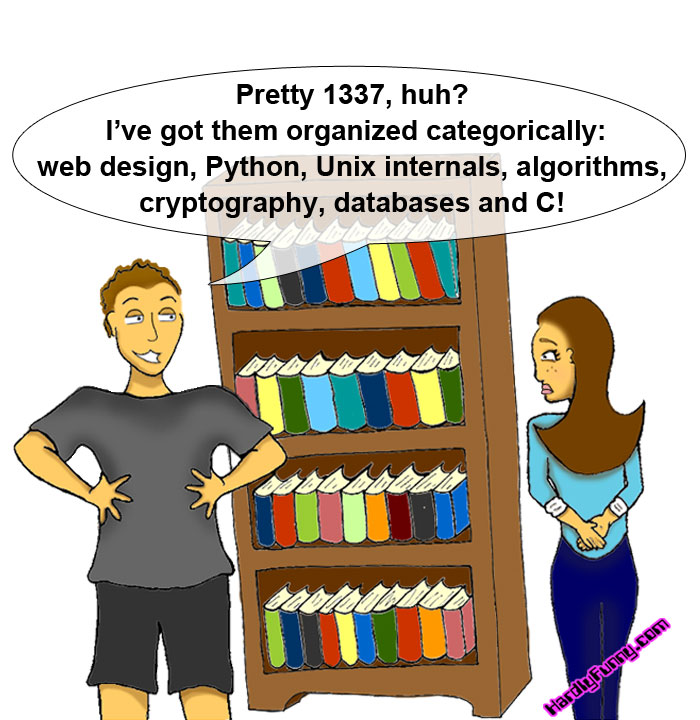
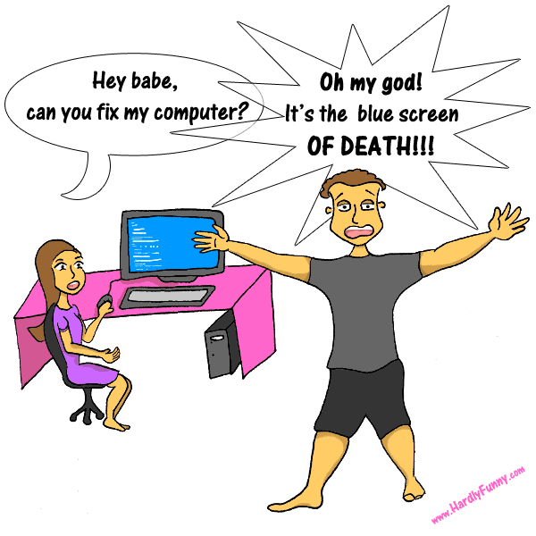
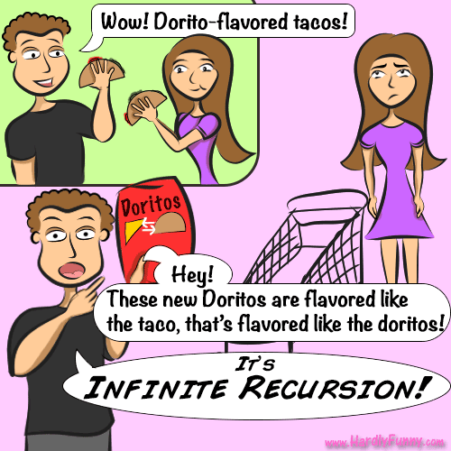
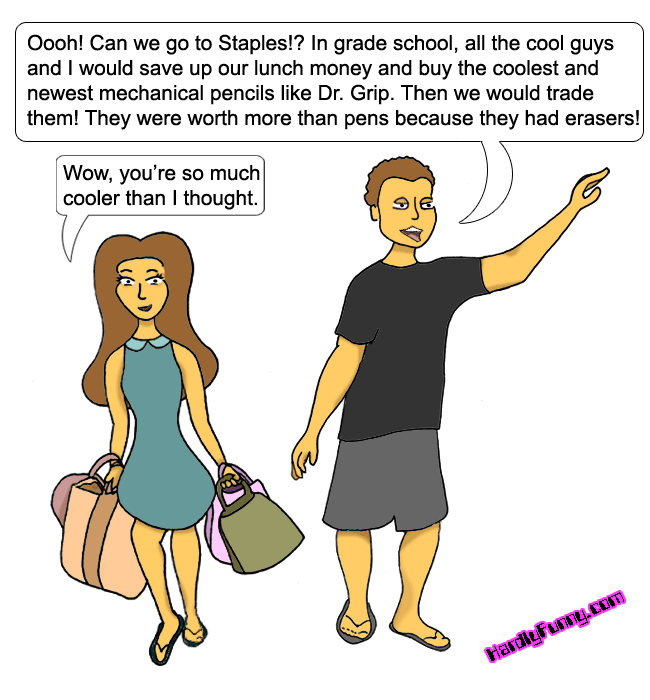
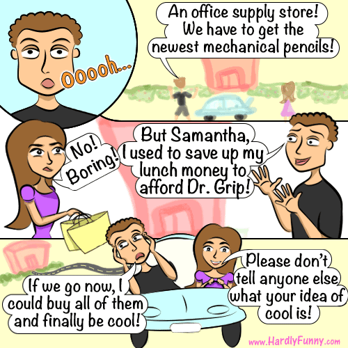

Design review · hardlyfunny.com
Four ways to move Samantha's comic off WordPress and onto a fast static site that will last. Every mockup below is live and clickable, and runs on the real archive: all 82 comics, her original artwork, and every note she wrote.
I pulled the whole site out through the WordPress.com API and read it comic by comic before designing anything. A few things stood out.
Every comic falls into one of three eras. All four designs frame all three well, including the loose early ones on plain white.

18 comics · Aug–Dec 2012
Big, loose canvases (650–800px) on white.

40 comics · Dec 2012–Mar 2013
600×600, one scene, bigger lettering.

24 comics · Mar 2013–Jan 2014
500×500, multi-panel, pastel pink and green.
The latest comic, #82, is a redraw of #20. The note is word for word the same. It shows how much her art grew, and it would make a lovely "then and now" feature.


Every color in her 2011 banner is a pure web-safe hex, very much of its time. Each design builds on these seven instead of inventing new ones.
?w=584, so the 600–800px originals never appear at full size./2013/05/15/infinite-recursion/-style URLs redirect to their new home, and /feed/ keeps working for RSS readers.404, so that's its title now.Each one is a working site, not a picture of one. Click through comics, open the archive, and try the arrow keys. Switch to phone width to check mobile.
It's the only direction about both of you, and that's what the comic is: her view, his quirks, and a chihuahua picking sides. The switch is the one signature moment. Everything else stays as calm as xkcd.
I'd take Classic's layout wholesale: permalinks, the image URL for sharing, Prev / Random / Next above and below the comic. Engineering Pad's sheet index could replace the archive if you like it. The four directions share the same data and navigation code, so mixing them is cheap.
If you'd rather stay quiet and timeless, Classic on its own is a great site too.
scripts/export_wordpress.py has already pulled all 82 comics, the original images and her notes into archive/comics.json./82/, plus the archive, About, and an RSS feed at /feed/. Tailwind for styles.